Chikusei, Ibaraki: things to do, food and stays
Chikusei · Ibaraki
Chikusei
Highlighted on the Ibaraki map.
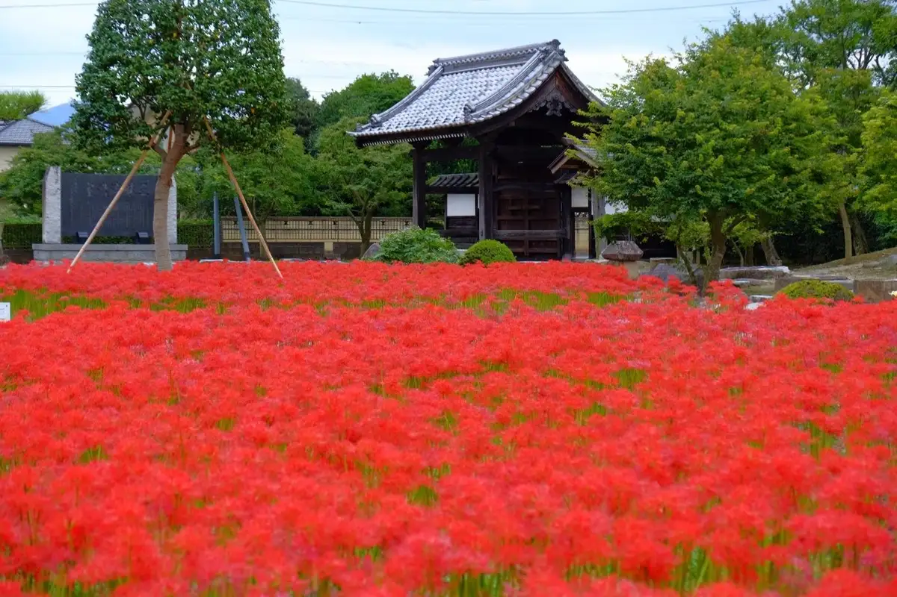
Stay
ホテルルートイン下館
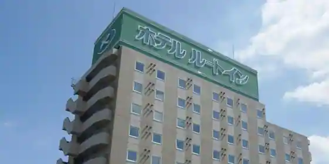
Hotel Route Inn Shimodate
Hotel in Nishiyagai, Chikusei with buffet meals and breakfast available.
ホテル 下館ヒルズ 下館駅前店（旧：SANTA）
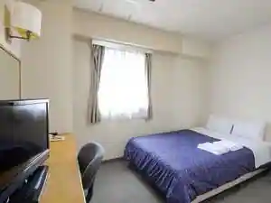
Hotel Shimodate Hiruzu Shimodate Ekimae Mise (Kyu : SANTA)
Hotel in Otsu, Chikusei with breakfast available.
ホテル新東
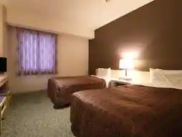
Hotel Shinto
Hotel in Otsu, Chikusei with business travelers; 2-minute drive from Shimodate Station.
ホテルニューつたや
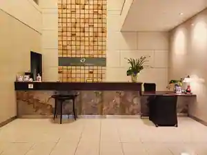
Hotel Nyu Tsutaya
Hotel in Otsu, Chikusei with breakfast available and parking; 5-minute walk from ( Station.
ビジネス旅館三水
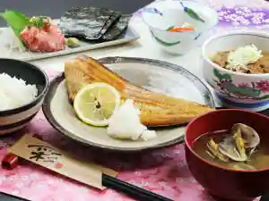
Business Ryokan Samizu
Ryokan inn in Isayama, Chikusei with Wi-Fi and parking; 1-minute walk from Kawashima Station.
平成ホテル
Heisei Hotel
Dining
さくらい
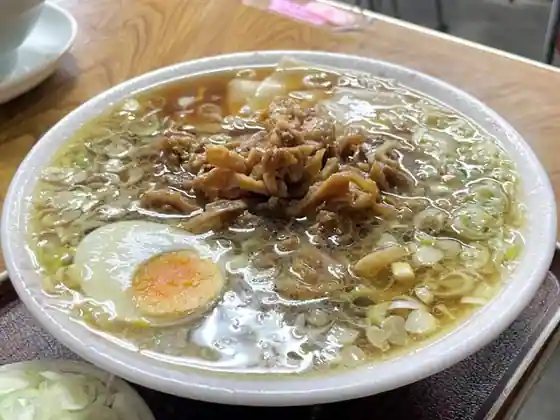
Sakurai
大木
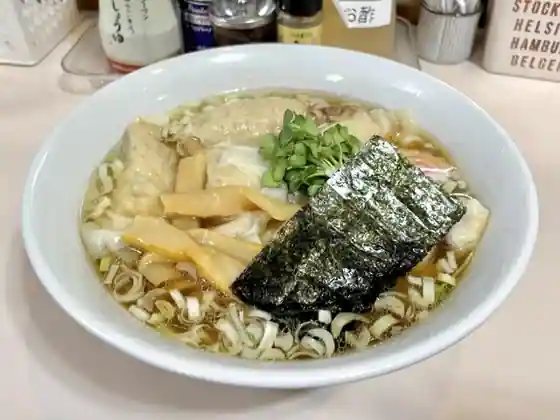
Taiboku
腕打 そばの館 えん野
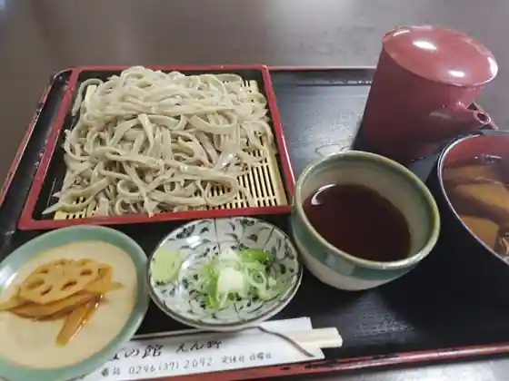
Ude Da Sobano Kan En No
NAGASHARI
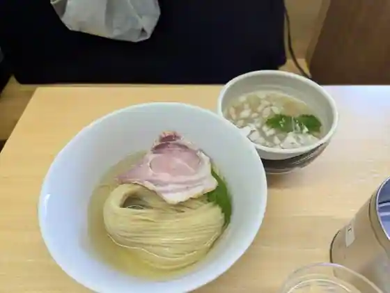
NAGASHARI
盛昭軒
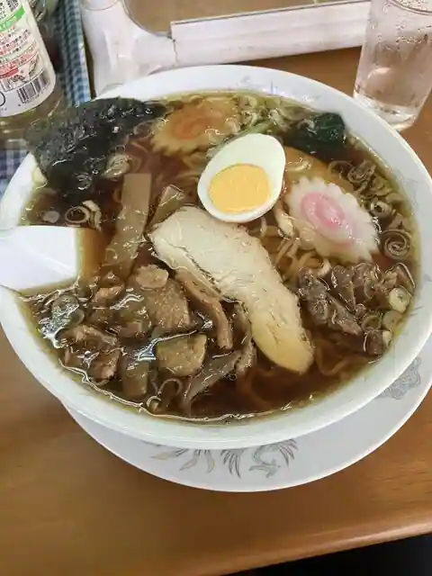
Moriaki Ken
ベーカリーズ キッチン オハナ 道の駅グランテラス筑西店
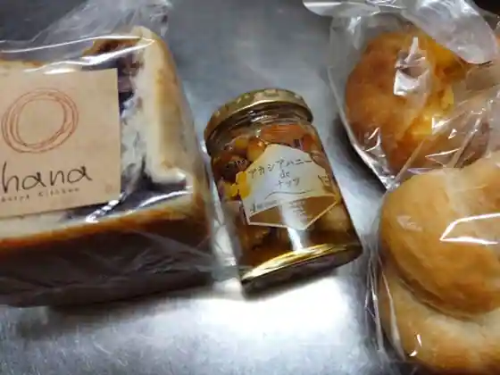
Bakery Zu Kitchen Ohana Michi No Eki Guran Terrace Chikusei
麺彩 こはね
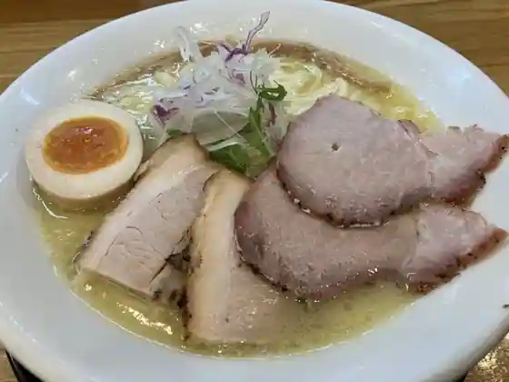
Men Sai Kohane
中山屋
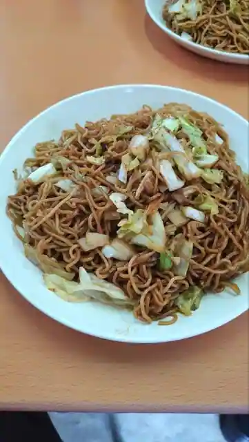
Nakayama Ya
支那そば やそじ
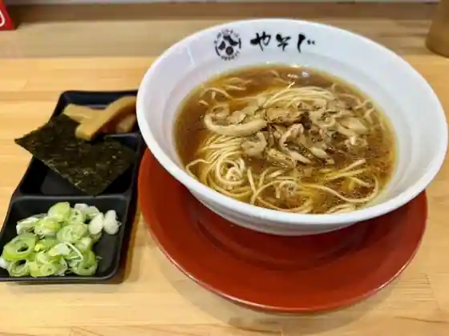
Shina Soba Yasoji
ボナンザ
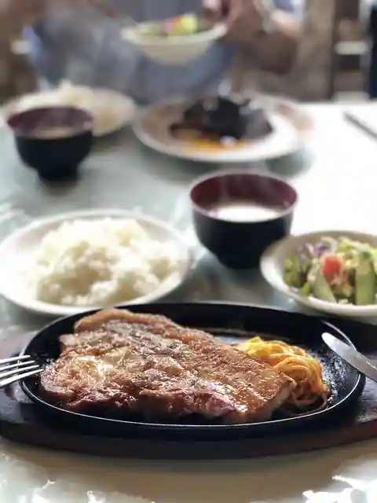
Bonanza
やらいでか
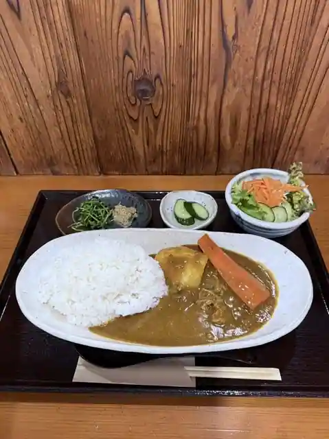
Yaraideka
二葉ごはん
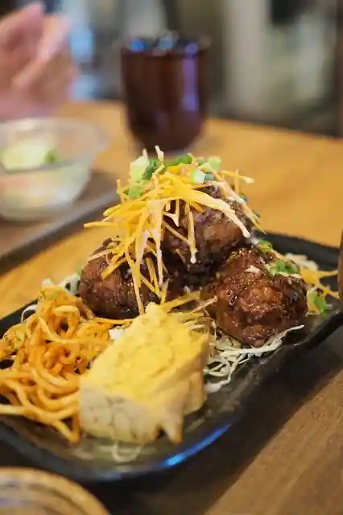
Futaba Gohan
香月 下館
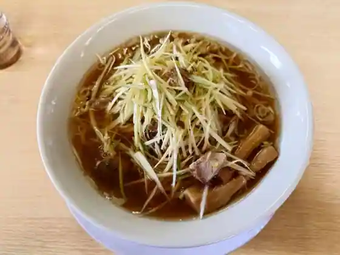
Kogetsu Shimodate
むさしや食堂
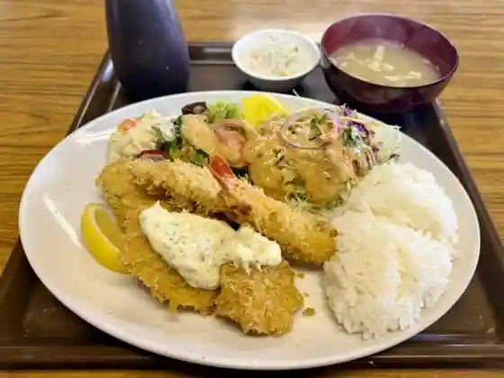
Musashiya Shokudo
さかえ屋食堂
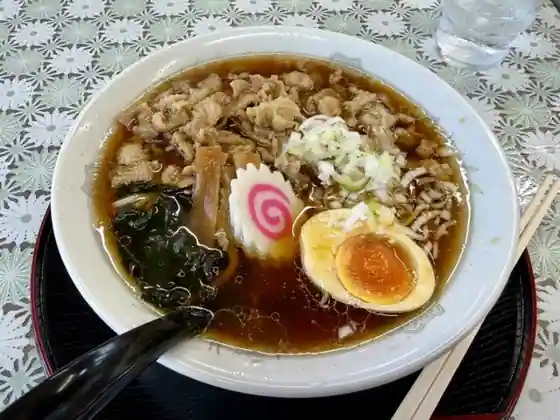
Sakae Ya Shokudo
菓子處 たちかわ 本店
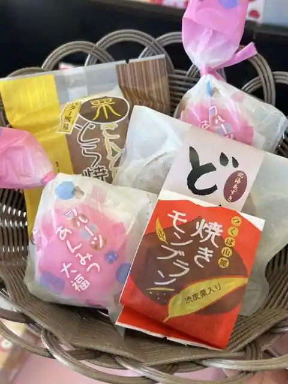
Kashi Tokoro Tachikawa Hon
めし処よこた
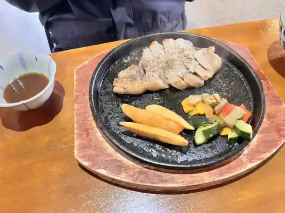
Meshi Tokoro Yokota
はなや
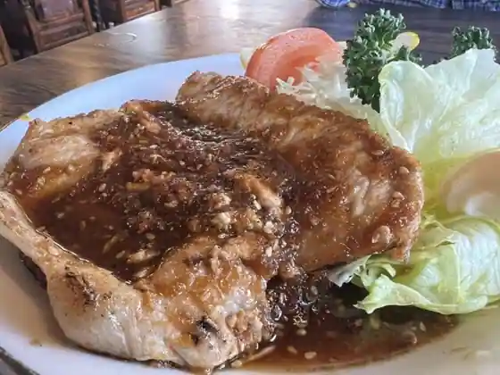
Hanaya
食堂 たむら
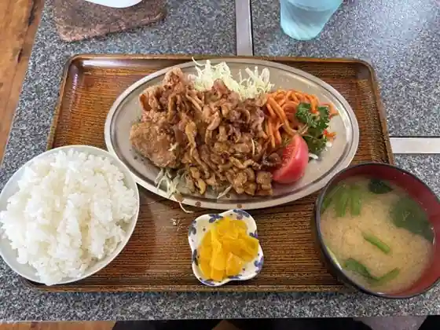
Shokudo Tamura
筑波軒
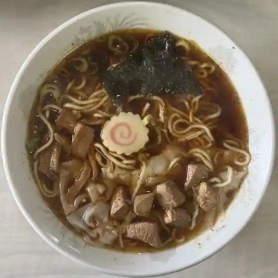
Tsukuba Ken
らーめん 桜
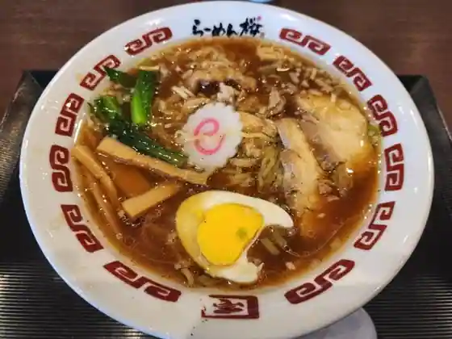
Ramen Sakura
館最中本舗 湖月庵
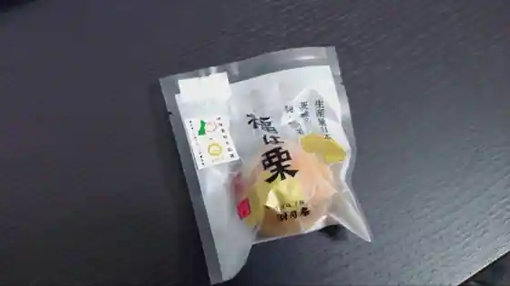
Kan Saichu Honpo Kogetsu Iori
高島
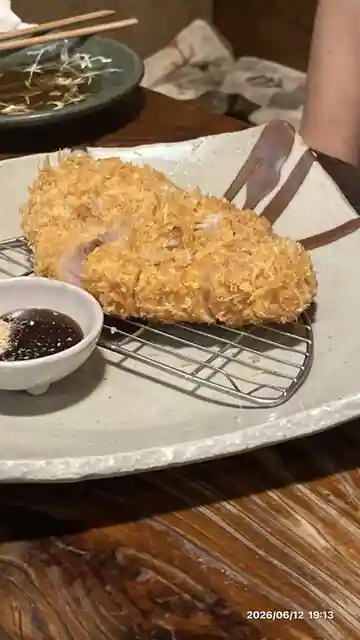
Takashima
太鼓判亭 本店
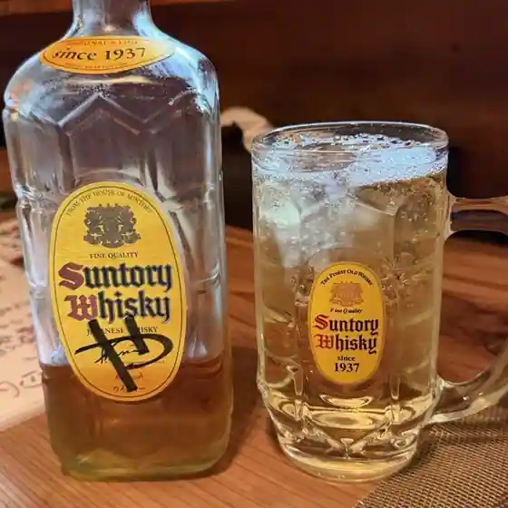
Taikoban Tei Hon
Sights
Roadside Station Guranterasu Chikusei
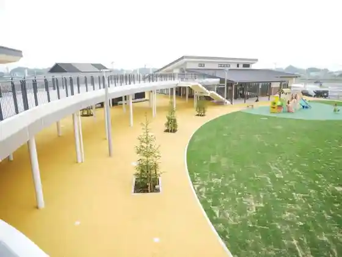
Boshi Shima Yusuichi
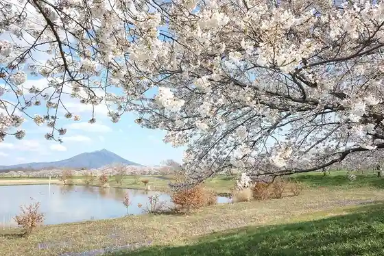
Toei Yama Sen Myo Tera
Sutoroberii Land Chikusei
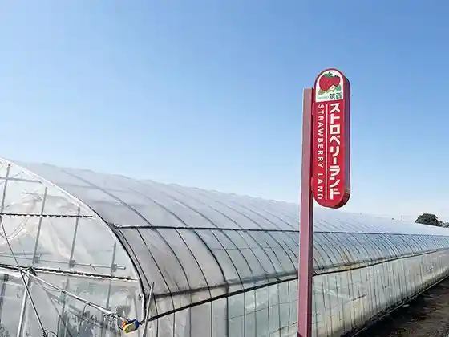
Raifuku Shuzo
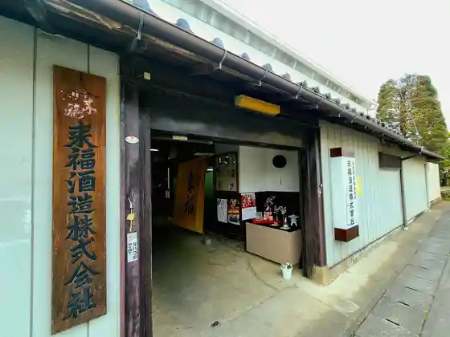
Mokatetsudo SL Ressha
Shimodate Art Museum
Ake no Genki Kan
Kan Saichu Honpo Kogetsu Iori Shimodate Main Shop
Miyayama Furusato Fureai Park
(Ari) Arai Seimen Tokoro (Tena Eudon'arai)
Itaya Namiyama Memorial Museum
Nichiren Shu Shion Tera
CAFE SORA
Hirosawa Kensei General Park
Kan Castle Ruins
Kannon In (Ritsu In)
Gosho Shrine
(Ari) Na Kaori Ya
JA Kita Tsukuba Kyowa Chokubai Tokoro
Gongyo Kawa Saikuringurodo
Men Workshop
Nakadate Kan'onji
Soba Tokoro Tomo
Yakiniku Wako